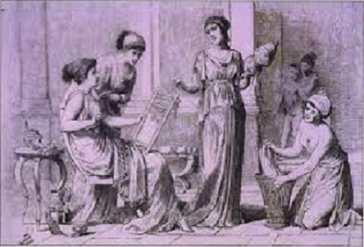
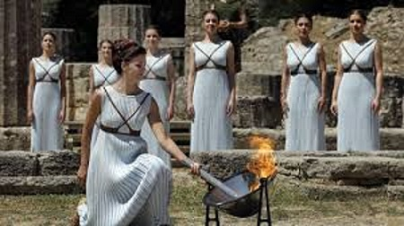

In ancient history women had to battle the disadvantages of rules and laws made for men and by men who dominated the goverment,society and every aspect of their life.
Women in the ancient Greek world had few rights in comparison to male citizens. They were seen as weak, dumb and incapable of living without a man next to them. Unlike the women and goddesses in Greek religion and mythology, women in Greece were much oppressed in society. In some city-states this was truer than in others.
Athenian women had very little choices open to them. Although social classes were very important at the time, upper class women did not differ much from other women in their society. They were uneducated, restricted to the house and were only allowed out in the company of a male relative (often while wearing a veil). At the onset of puberty girls were married off to men who were usually three or more times their age. A young wife was in charge of running the household, coordinating the slaves and working with her husband’s concubines. She had separate quarters in the house for womanly duties such as needlework.
Once married, she was also expected to provide heirs for her husband. Children were considered the property of their father, so if she divorces dowry came with her but not the children. They were technically able to divorce their husbands, but this wasn’t really step towards freedom. If she did divorce, she would simply be returned to the guardianship of a male family member.
As for rights, they barely had them. The laws in force in Greece at the time rarely even mentioned women. They were mentioned only when it came to testifying in court in a suicide case or when attending trials to provoke compassion. Athenian women could technically own property but had minimal control over it, because they were banned from buying or selling anything worth more than a bushel of wheat.
In Athens society there were also other classes. Next to the citizens there were non-citizens, also known as metics, and the slaves. Metics had much greater degree of freedom. They were educated, learning to read, write and play instruments. They could mix freely with the male population taking part in the vibrant city life in Athens. They could also have jobs. Helping in the shops or even taking part in prostitution. In Athens prostitution was seen as a normal job for metics and slave women, but this too was divided into classes.
Pornai were lower class, usually poor metics and slaves, who were paid very little and had no respect. On the other hand there were Heterae, women in higher class prostitution who lived in luxury. Some even lived in the houses of their lovers with his wife and kids.
This level of oppression was not the case in all poleis. That’s why wealthy Athenian men found Spartan women strange.
Spartan women were confident, assertive, nothing like Athenian women. Sparta had a rigid system in which boys were trained to be soldiers almost their whole lives, so much responsibility fell to women. They were well educated, took part in sports, and were taught to hunt, read, write and do accounts. They were encouraged to be brash and assertive. At sporting events and festivals they were treated equally.
As for marriage, Spartan women were usually married in their early twenties to men their own age. On their wedding night women had their head shaved, put into male clothes and waited in a dark room for the husband. It made the men more comfortable because they grew up tin barracks, training for war, where older men took younger boys as lovers as part of an institutionalized process. Women were so independent that even within a marriage they could have any lover they wished, if it helps them conceive strong and healthy children.
Women from good families often had the option to become priestesses. Even though women didn’t have much influence in society, some were able to do that trough religion. Once they become priestesses, they were responsible for the upkeep of the temples and statues; they organized festivals and even made public statements that had religious and political weight.
Ancient Rome had a patriarchal concept, based on the importance of the oldest man in the family, known as pater familias. He had an absolute power over the other family members, and even their lives. In the beginning only they had the right to vote, since they owned property and had a social reputation. Over time, lower social classes rebelled against the right to vote based solely on property ownership and, after centuries of frequent social conflicts, gained the right to vote. Even after this, women where completely left out of this right. They were completely invisible to public social life. They were not considered capable of doing things related any kind of decision-making, political engagement or public debate. Also, in Roman law, a woman was considered incompetent and was being compared to children and mentally ill people. Man had the right to sell, torture or even to kill a women.
Women in ancient Egypt had the most rights in ancient times. They had almost complete equality. They could lead their own business, conclude contracts, own the property, adopt children, testify in court, keep their last name after marriage et cetera. We can’t mention the voting right because the throne was inherited and there was no voting; but there is no doubt that women in Egypt were more respected than in other cultures that time.